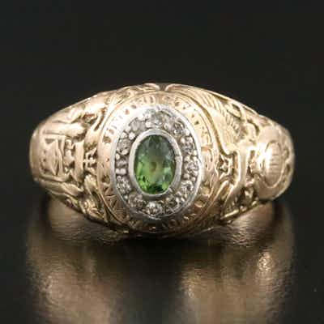

OUTPRICED14K Peridot and Diamond Naval Academy Class Ring
United States Naval Academy class ring, 14K yellow gold, oval peridot center stone with a
19h left
Current bid$833 · 27 bids
Est. value$1,131
Your max bid$618
All-in at max$746
Projected close$1,476
Margin at bid$138
Details & price history →